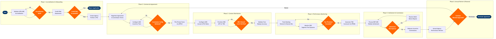

| Step | L4 Step Name | KPI / Target | Pain Point / Risk | Gate |
|---|---|---|---|---|
| 1.1 | Validate IATA/ARC Accreditation Status | Accreditation validation completed within 2 business days of application receipt | No API integration with IATA Customer Portal; analysts perform manual lookups causing 2–5 day delays and risk of using stale accreditation data | ⚠ |
| 1.2 | Conduct Credit Risk & Financial Assessment | 100% of new agency applications assessed before contract execution; zero post-activation credit defaults | Small TMCs may carry insufficient bond coverage for peak-period ticketing volumes; ARC debit memo recovery can take 60+ days, creating significant AR exposure | ⚠ |
| 1.3 | Create Agency & TMC Master Profile in PSS | PSS profile activation within 1 business day of credit approval; profile accuracy rate ≥99% | Duplicate IATA numbers across multiple GDS office IDs (PCCs) cause mis-attributed booking data and commission calculation errors that require manual reconciliation | |
| 2.1 | Negotiate Preferred Agency Agreement Terms | Contract cycle time ≤15 business days from first proposal to execution; ≥90% of tier-1 TMCs under signed agreement | IATA Resolution 814 caps base commission at 0% in most markets, forcing complex incentive structures that are difficult to model and audit; legal review backlogs extend cycle times | |
| 2.2 | Configure Commission & Incentive Tiers in GDS Backend | Configuration live within 3 business days of contract signing; incentive calculation accuracy ≥99.5% | Incentive tier configuration must be replicated independently across three GDS platforms (Sabre, Travelport, Amadeus), tripling the manual workload and creating divergence risk if one platform update is missed | ⚠ |
| 2.3 | File Agency-Specific Private Fares via ATPCO | Private fare filing completed within 24 hours of contract activation; zero Category 35 fare rule violations on ATPCO audit | ATPCO Category 35 private fare rules are complex and proprietary; misconfigured rules can expose negotiated rates to the public GDS display, a contractual breach that can result in agency clawback demands | |
| 3.1 | Configure GDS Agency Access & Booking Rules | GDS rule configuration completed within 2 business days of agreement activation; zero unauthorised fare-display incidents in 90-day post-activation audit | Maintaining consistent booking rule sets across three GDS environments is manual and error-prone; a mis-set point-of-sale rule in one GDS can allow an agency to ticket on an expired or wrong-market fare | |
| 3.2 | Provision NDC API Credentials for TMC Self-Serve | NDC channel live within 10 business days of TMC API onboarding request; NDC booking share ≥15% of managed corporate channel within 12 months | Many mid-market TMCs lack in-house API development capability, stalling NDC adoption; OBT (online booking tool) compatibility with NDC ancillaries (seat, bag, lounge) varies widely, fragmenting the corporate traveller experience | ⚠ |
| 3.3 | Validate Fare Display Accuracy Across All Channels | Fare parity across GDS and NDC channels ≥98%; critical parity failures (public rate shown as private) resolved within 4 hours | GDS cache refresh cycles (typically 20–30 minutes) mean new fare filings are not immediately visible, causing short-term channel inconsistency that generates agent complaints and mis-sells | |
| 4.1 | Track Agency Booking Volume & Channel Mix | Monthly reporting cycle completed by day 5 of following month; GDS booking data completeness ≥99.5% | Sabre PRISM captures Sabre bookings natively but requires manual data aggregation for Travelport and Amadeus segments, creating a consolidated view that is typically 5–7 days stale | |
| 4.2 | Monitor GDS Segment Fee Exposure | GDS segment fee cost as % of distribution revenue ≤3.5%; NDC deflection saving ≥$1.20 per deflected segment | GDS full-content agreements (FCAs) lock the airline into fee-per-segment structures even when NDC alternatives exist; renegotiating FCAs mid-term requires regulatory approval in some markets (EU, Australia) | ⚠ |
| 4.3 | Generate TMC Quarterly Scorecard & QBR Pack | QBR delivered to top-20 TMCs within 15 days of quarter-end; ≥80% of TMCs achieve at least Tier 1 incentive threshold | Corporate travel managers increasingly demand NDC-sourced data in QBR reports; Sabre PRISM does not natively include NDC transaction data, requiring manual data joining that adds 2–3 days to production cycle | |
| 5.1 | Process BSP/ARC Weekly Settlement Run | BSP settlement reconciliation completed within 2 business days of remittance receipt; reconciliation accuracy ≥99.8% | BSP processing timelines vary by country (weekly in most markets, bi-weekly in some); multi-currency remittances create FX exposure that must be hedged in SAP — hedging mismatches can misstate revenue by 0.5–1% | ⚠ |
| 5.2 | Resolve Debit Memo Disputes with Agencies | ADM dispute resolution cycle ≤30 days; ADM acceptance rate ≥85% without IATA panel escalation | IATA Resolution 850 requires airlines to issue ADMs within strict time windows (typically 9 months of ticket issue); late ADMs are automatically rejected by agencies, creating unrecoverable revenue leakage | ⚠ |
| 5.3 | Calculate & Disburse Incentive Commission Payments | Incentive payments disbursed within 30 days of quarter-end; payment accuracy ≥99.9% vs contracted incentive schedule | Manual incentive tier calculations in spreadsheets are audit-vulnerable; tier attainment disputes with agencies delay payment and strain commercial relationships, particularly for top-50 TMCs during year-end close | |
| 6.1 | Conduct Annual Agency Performance Review | Annual reviews completed for 100% of preferred agency contracts before contract expiry; ≥90% of top-20 TMCs retained at renewal | Airline-TMC relationships are increasingly contested as TMCs push for NDC surcharges to offset GDS revenue loss; failure to renew top TMC agreements risks losing 8–15% of managed corporate revenue overnight | ⚠ |
| 6.2 | Renegotiate Terms or Execute Contract Termination | Contract renewal executed ≥30 days before expiry to avoid lapse; termination-to-deactivation cycle ≤5 business days to prevent unauthorised ticketing | Terminated agencies may continue issuing tickets against an active PSS profile if deactivation is delayed, creating ticketing liability; multi-GDS deactivation must be coordinated simultaneously to prevent exploits through alternate channels |